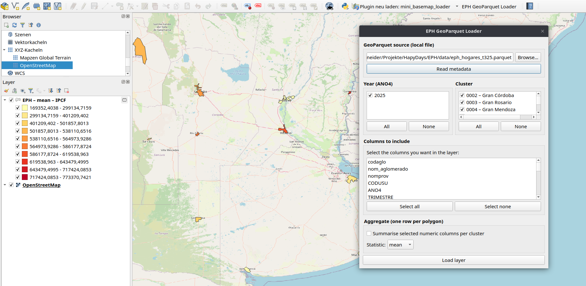

EPH GeoParquet Loader is a QGIS plugin to summarise and
visualise data from the Argentinian Permanent Household Survey
(Encuesta Permanente de Hogares).
It reads GeoParquet files via DuckDB, lets the user filter by year and urban cluster (aglomerado), pick columns, and optionally aggregate data per polygon with statistics like mean, median, sum, etc. The result is loaded as a styled QGIS layer with graduated colours.
It reads GeoParquet files via DuckDB, lets the user filter by year and urban cluster (aglomerado), pick columns, and optionally aggregate data per polygon with statistics like mean, median, sum, etc. The result is loaded as a styled QGIS layer with graduated colours.

Plugin dialog inside QGIS
Source Code
eph_loader/__init__.py
"""EPH GeoParquet Loader – QGIS plugin entry point."""
def classFactory(iface):
from .plugin import EphLoaderPlugin
return EphLoaderPlugin(iface)eph_loader/plugin.py
"""EPH GeoParquet Loader – main plugin class (toolbar button + action)."""
from qgis.PyQt.QtWidgets import QAction
from qgis.PyQt.QtGui import QIcon
from .dialog import EphLoaderDialog
class EphLoaderPlugin:
def __init__(self, iface):
self.iface = iface
self.action = None
def initGui(self):
self.action = QAction(
QIcon(),
"EPH GeoParquet Loader",
self.iface.mainWindow(),
)
self.action.triggered.connect(self.run)
self.iface.addToolBarIcon(self.action)
self.iface.addPluginToMenu("EPH Loader", self.action)
def unload(self):
self.iface.removePluginMenu("EPH Loader", self.action)
self.iface.removeToolBarIcon(self.action)
def run(self):
dlg = EphLoaderDialog(self.iface)
dlg.exec_()eph_loader/dialog.py
"""EPH GeoParquet Loader – dialog with aglomerado, year & aggregation."""
import os
import tempfile
import duckdb
from qgis.PyQt.QtWidgets import (
QDialog,
QVBoxLayout,
QHBoxLayout,
QLabel,
QComboBox,
QListWidget,
QListWidgetItem,
QPushButton,
QLineEdit,
QMessageBox,
QAbstractItemView,
QApplication,
QGroupBox,
QFileDialog,
QCheckBox,
)
from qgis.PyQt.QtCore import Qt
from qgis.core import (
QgsVectorLayer,
QgsProject,
QgsGraduatedSymbolRenderer,
QgsClassificationQuantile,
QgsRendererRangeLabelFormat,
QgsStyle,
)
# ── Default local path (parquet next to the plugin directory) ────────────────
_PLUGIN_DIR = os.path.dirname(__file__)
_DEFAULT_PARQUET = os.path.join(
_PLUGIN_DIR, os.pardir, "data", "eph_hogares.parquet"
)
# Columns that are always included (geometry + join key)
_ALWAYS = {"codaglo", "nom_aglomerado"}
# Columns that are identifiers / text — never aggregated
_NON_NUMERIC = {"CODUSU", "MAS_500", "codaglo", "nom_aglomerado", "nomprov",
"geometry"}
class EphLoaderDialog(QDialog):
"""Dialog: file → connect → year / aglomerado / columns / aggregate → load."""
def __init__(self, iface, parent=None):
super().__init__(parent or iface.mainWindow())
self.iface = iface
self.setWindowTitle("EPH GeoParquet Loader")
self.setMinimumWidth(500)
self._all_columns: list[str] = []
self._aglomerados: list[dict] = []
self._years: list[int] = []
self._build_ui()
# ── UI ────────────────────────────────────────────────────────────────
def _build_ui(self):
layout = QVBoxLayout(self)
# ── File source ──────────────────────────────────────────────────
grp_src = QGroupBox("GeoParquet source (local file)")
gl = QVBoxLayout(grp_src)
file_row = QHBoxLayout()
self.file_edit = QLineEdit(os.path.normpath(_DEFAULT_PARQUET))
file_row.addWidget(self.file_edit)
btn_browse = QPushButton("Browse…")
btn_browse.clicked.connect(self._on_browse)
file_row.addWidget(btn_browse)
gl.addLayout(file_row)
self.btn_connect = QPushButton("Read metadata")
self.btn_connect.clicked.connect(self._on_connect)
gl.addWidget(self.btn_connect)
layout.addWidget(grp_src)
# ── Filters row (year + aglomerado) – checkable lists ────────────
filter_row = QHBoxLayout()
# Year list
grp_year = QGroupBox("Year (ANO4)")
yl = QVBoxLayout(grp_year)
self.year_list = QListWidget()
self.year_list.setMaximumHeight(90)
yl.addWidget(self.year_list)
yr_btn = QHBoxLayout()
btn_yr_all = QPushButton("All")
btn_yr_all.clicked.connect(lambda: self._check_all(self.year_list, True))
btn_yr_none = QPushButton("None")
btn_yr_none.clicked.connect(lambda: self._check_all(self.year_list, False))
yr_btn.addWidget(btn_yr_all)
yr_btn.addWidget(btn_yr_none)
yl.addLayout(yr_btn)
filter_row.addWidget(grp_year)
# Aglomerado list
grp_aglo = QGroupBox("Cluster")
al = QVBoxLayout(grp_aglo)
self.aglo_list = QListWidget()
self.aglo_list.setMaximumHeight(150)
al.addWidget(self.aglo_list)
ag_btn = QHBoxLayout()
btn_ag_all = QPushButton("All")
btn_ag_all.clicked.connect(lambda: self._check_all(self.aglo_list, True))
btn_ag_none = QPushButton("None")
btn_ag_none.clicked.connect(lambda: self._check_all(self.aglo_list, False))
ag_btn.addWidget(btn_ag_all)
ag_btn.addWidget(btn_ag_none)
al.addLayout(ag_btn)
filter_row.addWidget(grp_aglo)
layout.addLayout(filter_row)
# ── Column picker ────────────────────────────────────────────────
grp_cols = QGroupBox("Columns to include")
cl = QVBoxLayout(grp_cols)
cl.addWidget(QLabel("Select the columns you want in the layer:"))
self.col_list = QListWidget()
self.col_list.setSelectionMode(QAbstractItemView.MultiSelection)
cl.addWidget(self.col_list)
btn_row = QHBoxLayout()
btn_all = QPushButton("Select all")
btn_all.clicked.connect(self._select_all)
btn_none = QPushButton("Select none")
btn_none.clicked.connect(self._select_none)
btn_row.addWidget(btn_all)
btn_row.addWidget(btn_none)
cl.addLayout(btn_row)
layout.addWidget(grp_cols)
# ── Aggregation ──────────────────────────────────────────────────
grp_agg = QGroupBox("Aggregate (one row per polygon)")
agg_l = QVBoxLayout(grp_agg)
self.chk_aggregate = QCheckBox("Summarise selected numeric columns per cluster")
agg_l.addWidget(self.chk_aggregate)
agg_combo_row = QHBoxLayout()
agg_combo_row.addWidget(QLabel("Statistic:"))
self.combo_stat = QComboBox()
self.combo_stat.addItems(["mean", "min", "max", "sum", "median"])
agg_combo_row.addWidget(self.combo_stat)
agg_combo_row.addStretch()
agg_l.addLayout(agg_combo_row)
layout.addWidget(grp_agg)
# ── Load button ──────────────────────────────────────────────────
self.btn_load = QPushButton("Load layer")
self.btn_load.setEnabled(False)
self.btn_load.clicked.connect(self._on_load)
layout.addWidget(self.btn_load)
# ── Browse ───────────────────────────────────────────────────────────
def _on_browse(self):
path, _ = QFileDialog.getOpenFileName(
self, "Select GeoParquet file", "",
"Parquet files (*.parquet);;All files (*)",
)
if path:
self.file_edit.setText(path)
# ── Connect: read metadata from local parquet via DuckDB ─────────────
def _on_connect(self):
path = self.file_edit.text().strip()
if not path or not os.path.isfile(path):
QMessageBox.warning(self, "File not found", f"Cannot find:\n{path}")
return
QApplication.setOverrideCursor(Qt.WaitCursor)
try:
con = self._make_con()
# Column names
meta = con.execute(
f"DESCRIBE SELECT * FROM read_parquet('{path}')"
).fetchall()
self._all_columns = [row[0] for row in meta]
# Distinct years
years = con.execute(
f"SELECT DISTINCT ANO4 FROM read_parquet('{path}') ORDER BY ANO4"
).fetchall()
self._years = [int(r[0]) for r in years]
# Distinct aglomerados
aglos = con.execute(
f"""SELECT DISTINCT codaglo, nom_aglomerado
FROM read_parquet('{path}') ORDER BY codaglo"""
).fetchall()
self._aglomerados = [{"code": r[0], "name": r[1]} for r in aglos]
con.close()
# Populate year list (all checked by default)
self.year_list.clear()
for y in self._years:
item = QListWidgetItem(str(y))
item.setFlags(item.flags() | Qt.ItemIsUserCheckable)
item.setCheckState(Qt.Checked)
item.setData(Qt.UserRole, y)
self.year_list.addItem(item)
# Populate aglomerado list (all checked by default)
self.aglo_list.clear()
for a in self._aglomerados:
item = QListWidgetItem(f"{a['code']} – {a['name']}")
item.setFlags(item.flags() | Qt.ItemIsUserCheckable)
item.setCheckState(Qt.Checked)
item.setData(Qt.UserRole, a["code"])
self.aglo_list.addItem(item)
# Populate column list (skip geometry — always included)
self.col_list.clear()
for col in self._all_columns:
if col == "geometry":
continue
item = QListWidgetItem(col)
item.setSelected(col in _ALWAYS)
self.col_list.addItem(item)
self.btn_load.setEnabled(True)
except Exception as exc:
QMessageBox.critical(self, "Connection error", str(exc))
finally:
QApplication.restoreOverrideCursor()
# ── Load ─────────────────────────────────────────────────────────────
def _on_load(self):
path = self.file_edit.text().strip()
selected_cols = [item.text() for item in self.col_list.selectedItems()]
if not selected_cols:
QMessageBox.warning(self, "No columns", "Select at least one column.")
return
aggregate = self.chk_aggregate.isChecked()
stat_fn = self.combo_stat.currentText()
# ── Gather checked years and aglomerados ─────────────────────
sel_years = self._checked_values(self.year_list)
sel_aglos = self._checked_values(self.aglo_list)
# ── Build WHERE clauses ──────────────────────────────────────────
conditions = []
if sel_aglos and len(sel_aglos) < len(self._aglomerados):
in_list = ", ".join(f"'{c}'" for c in sel_aglos)
conditions.append(f"codaglo IN ({in_list})")
if sel_years and len(sel_years) < len(self._years):
in_list = ", ".join(str(y) for y in sel_years)
conditions.append(f"ANO4 IN ({in_list})")
where = ("WHERE " + " AND ".join(conditions)) if conditions else ""
# ── Build SELECT ─────────────────────────────────────────────────
attr_cols = [c for c in selected_cols if c != "geometry"]
if aggregate:
# Group by codaglo → one row per polygon.
# FIRST() for text/id columns, chosen stat for numeric ones.
agg_parts = ["FIRST(geometry) AS geometry"]
for c in attr_cols:
if c in _NON_NUMERIC:
agg_parts.append(f'FIRST("{c}") AS "{c}"')
else:
agg_parts.append(
f'{stat_fn}(TRY_CAST("{c}" AS DOUBLE)) AS "{c}"'
)
agg_sql = ", ".join(agg_parts)
select_sql = (
f"SELECT {agg_sql} "
f"FROM read_parquet('{path}') {where} "
f"GROUP BY codaglo"
)
else:
cols_sql = "geometry, " + ", ".join(f'"{c}"' for c in attr_cols)
select_sql = (
f"SELECT {cols_sql} FROM read_parquet('{path}') {where}"
)
# Identify the single-numeric-variable case for naming & styling
numeric_cols = [c for c in attr_cols if c not in _NON_NUMERIC]
# ── Layer name ───────────────────────────────────────────────────
parts = ["EPH"]
if sel_years and len(sel_years) < len(self._years):
if len(sel_years) <= 3:
parts.append(",".join(str(y) for y in sel_years))
else:
parts.append(f"{len(sel_years)}y")
if sel_aglos and len(sel_aglos) < len(self._aglomerados):
if len(sel_aglos) == 1:
match = next(
(a for a in self._aglomerados if a["code"] == sel_aglos[0]),
None,
)
if match:
parts.append(match["name"])
else:
parts.append(f"{len(sel_aglos)} clusters")
if aggregate:
parts.append(stat_fn)
if len(numeric_cols) == 1:
parts.append(numeric_cols[0])
name = " – ".join(parts) if len(parts) > 1 else "EPH hogares"
# ── Export to temp GeoPackage ────────────────────────────────────
safe_name = "".join(
c if c.isalnum() or c in "-_" else "_" for c in name
)
tmp_gpkg = os.path.join(tempfile.gettempdir(), safe_name + ".gpkg")
if os.path.exists(tmp_gpkg):
os.remove(tmp_gpkg)
copy_sql = (
f"COPY ({select_sql}) TO '{tmp_gpkg}' "
f"WITH (FORMAT GDAL, DRIVER 'GPKG', SRS 'EPSG:4326')"
)
QApplication.setOverrideCursor(Qt.WaitCursor)
try:
con = self._make_con()
con.execute(copy_sql)
con.close()
layer = QgsVectorLayer(tmp_gpkg, name, "ogr")
if not layer.isValid():
QMessageBox.critical(self, "Error", "Could not create layer.")
return
QgsProject.instance().addMapLayer(layer)
# Auto-style: graduated colours when exactly 1 numeric column
if len(numeric_cols) == 1:
self._apply_graduated_style(layer, numeric_cols[0])
self.iface.messageBar().pushSuccess(
"EPH Loader",
f"Loaded {layer.featureCount()} features. "
"Right-click → Export → Save As… to keep as GeoPackage.",
)
self.accept()
except Exception as exc:
QMessageBox.critical(self, "Query error", str(exc))
finally:
QApplication.restoreOverrideCursor()
# ── Styling ──────────────────────────────────────────────────────────
@staticmethod
def _apply_graduated_style(layer, field_name, num_classes=10):
"""Apply a graduated colour ramp (Sketcher) with quantile classes."""
style = QgsStyle.defaultStyle()
ramp_name = "Sketcher"
ramp = style.colorRamp(ramp_name)
if ramp is None:
for fallback in ("YlOrRd", "RdYlGn", "Spectral", "Blues"):
ramp = style.colorRamp(fallback)
if ramp is not None:
ramp_name = fallback
break
if ramp is None:
return
renderer = QgsGraduatedSymbolRenderer(field_name)
renderer.setSourceColorRamp(ramp)
label_fmt = QgsRendererRangeLabelFormat()
label_fmt.setFormat("%1 – %2")
label_fmt.setPrecision(1)
label_fmt.setTrimTrailingZeroes(True)
renderer.setLabelFormat(label_fmt)
renderer.setClassificationMethod(QgsClassificationQuantile())
renderer.updateClasses(layer, num_classes)
layer.setRenderer(renderer)
layer.triggerRepaint()
# ── Helpers ──────────────────────────────────────────────────────────
@staticmethod
def _make_con():
"""Return a DuckDB connection with the spatial extension ready."""
con = duckdb.connect()
con.execute("INSTALL spatial; LOAD spatial;")
return con
def _select_all(self):
for i in range(self.col_list.count()):
self.col_list.item(i).setSelected(True)
def _select_none(self):
for i in range(self.col_list.count()):
self.col_list.item(i).setSelected(False)
@staticmethod
def _check_all(list_widget, state):
for i in range(list_widget.count()):
list_widget.item(i).setCheckState(
Qt.Checked if state else Qt.Unchecked
)
@staticmethod
def _checked_values(list_widget):
return [
list_widget.item(i).data(Qt.UserRole)
for i in range(list_widget.count())
if list_widget.item(i).checkState() == Qt.Checked
]eph_loader/metadata.txt
[general]
name=EPH GeoParquet Loader
qgisMinimumVersion=3.22
description=Load EPH household survey data from a GeoParquet using DuckDB
version=0.1.0
author=Elisa Schneider
about=Plugin that queries a GeoParquet file via DuckDB, lets the user pick
an aglomerado and columns, and creates a temporary QGIS layer.
tags=eph,geoparquet,duckdb,argentina,census
category=VectorPhoto credit: Charles J. Sharp, CC BY-SA 4.0